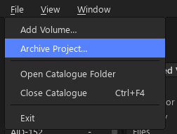
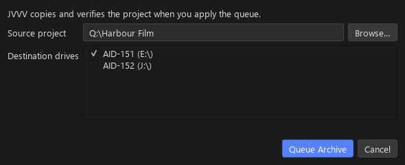
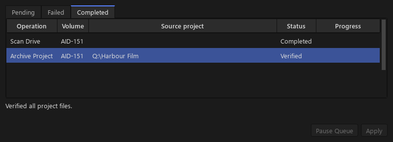
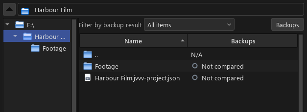

Archive a project to a drive
This example copies Q:\Harbour Film to E:\Harbour Film on AID-151. The original stays on Q:\. If your destination HDD is new, add it to the catalogue and queue its first scan.
1. Open Archive Project
Open your catalogue for editing and choose File → Archive Project….

2. Choose what to copy and where it goes
Click Browse… beside Source project and select the finished project folder. Under Destination drives, tick the HDD that should receive the copy. Check the source path and drive ID, then click Queue Archive.

For two copies, follow Queue the same project for two drives before clicking Queue Archive.
3. Apply the archive
Beside the catalogue name, check the queued project and destination. Click Apply to start. If several tasks are queued, the button says Apply All. The same button is available in Queue Manager.
4. Wait for Verified
Keep the source available and the HDD connected. JVVV copies each file and calculates its hash. When the status says Reading back the destination…, it is reading the copy from the HDD and checking it against that hash. Wait for Verified before ejecting a drive that has finished all its work.

5. Browse the copy
In the catalogue, select AID-151 and open Harbour Film. JVVV added the files it verified to that volume’s index. The copy contains the project files and a marker named Harbour Film.jvvv-project.json.

The catalogue now holds a fingerprint for each original file. You can close JVVV and use that record again when you need another copy.